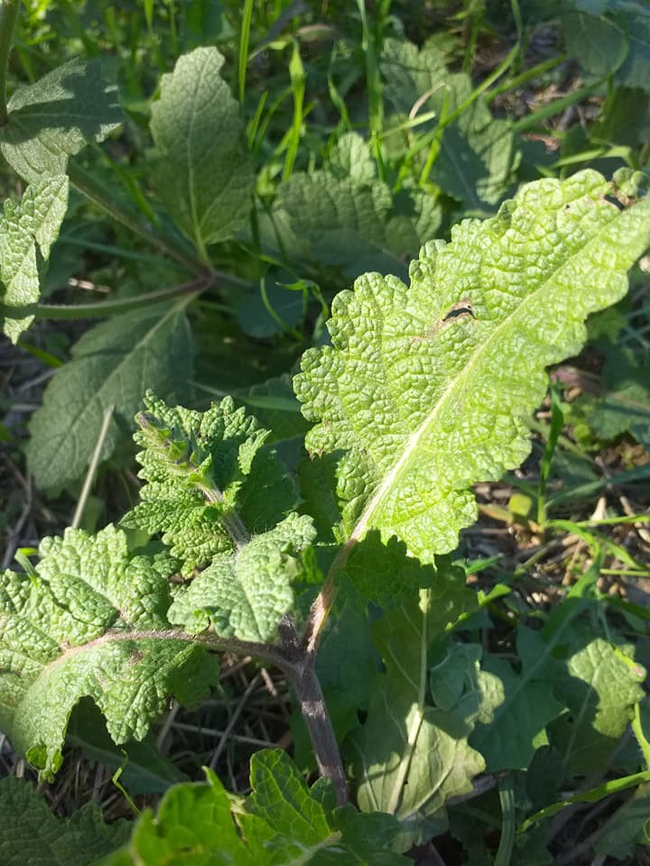

Curiosità
Nella tradizione popolare la salvia aveva una forte connotazione magica. Si usava per scacciare gli incubi notturni, ponendo tre foglie sotto una candela, unico lume nella stanza buia; il riverbero si sarebbe allora popolato di ombre, vermi e bisce guizzanti sulle pareti in penombra. Bisognava ora pronunciare l'incantesimo:
O salvia salutare,
O salvia amica mia,
Queste visioni amare,
Da me portale via.
Quando sparivano i fantasmi, si bruciavano le foglie all'aperto scacciando i sogni infausti fuori di casa.
Massimo